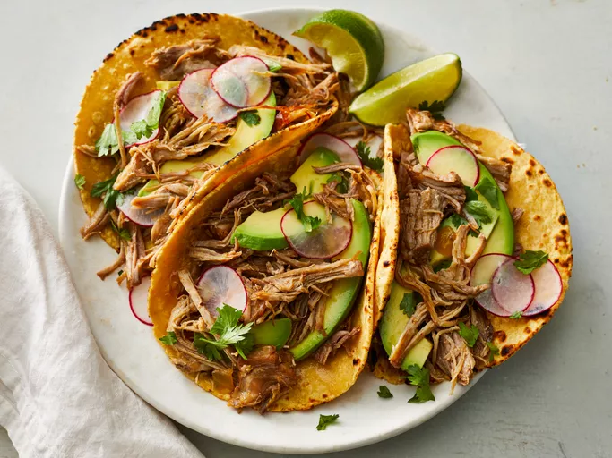

Carnitas

Description
Carnitas are a delicious and savory taco that originated in Michoacán, Mexico. They are made with pork, onions,
and cilantro.
Ingredients
- 1 lb pork
- 1 cup onions
- 1/2 cup cilantro
Instructions
- Cook the pork
- Add onions to the pork
- Place pork and onion mixture in tortillas
- Add cilantro
Enjoy!
Home